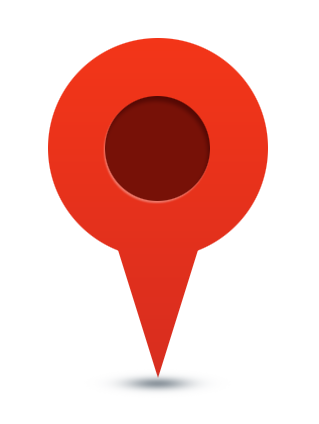

This example shows how to add text into markings, and how to draw markings with rounded corner.
The chart here is actually a goal ladder map, and it also shows how to use image plugin to draw icons on to your chart (Notice the "You are here" icon  on this chart.). If you don't need to draw images/icons onto your chart, you don't need to reference the image plugin.